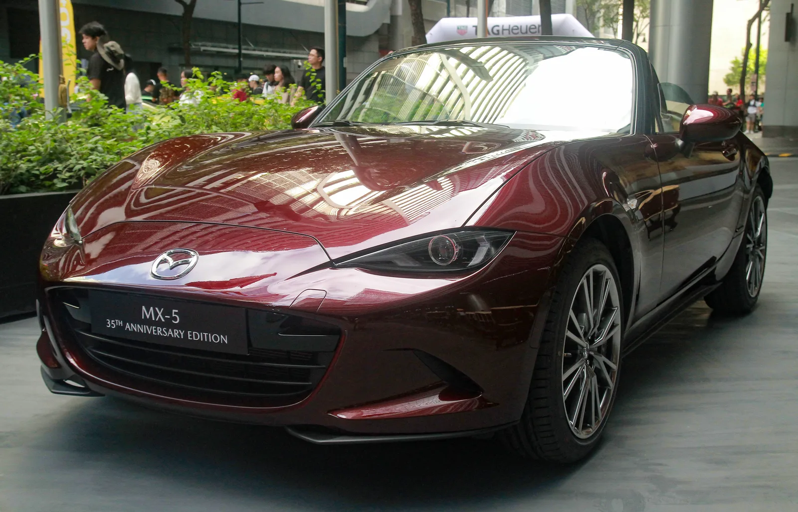
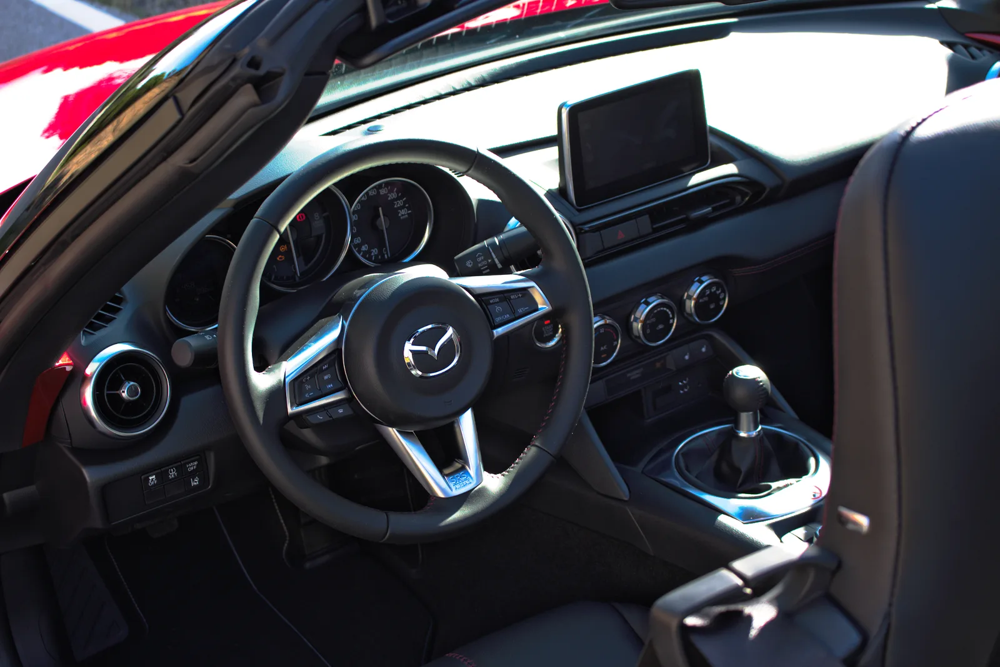
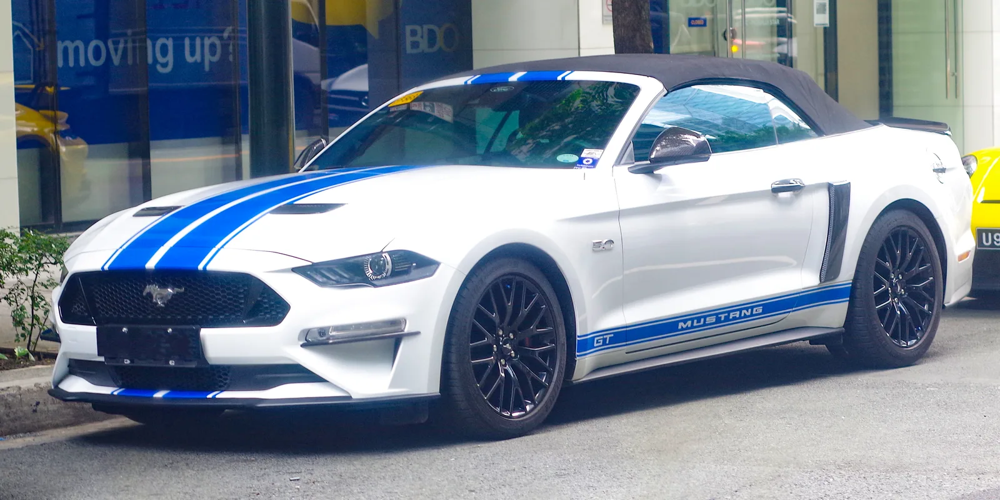
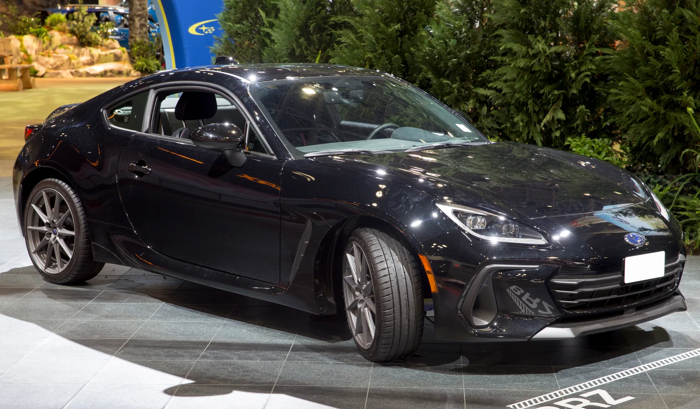

▲ 마쓰다 MX-5 미아타(35주년 기념 에디션). iSeeCars 분석에서 2만 5,000달러 이하 중고 스포츠카 중 신뢰도 1위(8.8/10)에 올랐다. (사진=Wikimedia Commons)
중고차 1,200만 대를 뜯어본 결과, 답은 로드스터였다
미국 중고차 데이터 업체 iSeeCars가 자사 데이터베이스에 쌓인 차량 약 1,200만 대의 판매·주행거리·수명 데이터를 분석해 '2만 5,000달러 이하 신뢰도 높은 중고 스포츠카' 순위를 내놨다. 자동차 매체 CarBuzz는 이 결과를 두고 "1,200만 대 규모의 대형 연구가, 미아타 오너들이 이미 알고 있던 사실을 확인해줬다"고 평했다.
결과는 예상 밖이었다. 강력한 5.0리터 V8을 얹은 포드 머스탱도, 수평대향 엔진과 후륜구동으로 유명한 스바루 BRZ도 아닌, 배기량 2.0리터 안팎의 작고 가벼운 마쓰다 MX-5 미아타가 이 부문 1위를 차지한 것이다.
iSeeCars 신뢰도 점수, 미아타는 8.8점으로 1위
iSeeCars는 차량의 '실사용 수명'과 '20만 마일(약 32만km) 이상 주행 가능성'을 핵심 지표로 삼아 10점 만점의 신뢰도 점수를 산출한다. 여기에 감가율과 안전성 데이터를 더해 최종 순위를 매기는 방식이다.
2만 5,000달러 이하 중고 스포츠카 부문에서 매겨진 점수는 다음과 같다.
- 1위 — 2021년형 마쓰다 MX-5 미아타: 신뢰도 8.8/10, 평균 중고가 약 2만 4,914달러
- 2위 — 2020년형 스바루 BRZ: 신뢰도 7.3/10, 평균 중고가 약 2만 3,431달러
- 3위 — 2023년형 포드 머스탱(컨버터블): 신뢰도 6.7/10, 평균 중고가 약 2만 4,681달러
1위 미아타와 2위 BRZ의 점수 차이는 1.5점, 3위 머스탱과는 2.1점 차이로 소폭이 아니다. 여기에 iSeeCars는 별도로 MX-5의 평균 사용 수명을 16.8년으로 집계했는데, 이는 동사가 분석한 중형 세단급 평균 수명과 비교해도 밀리지 않는 수치다.
왜 미아타는 잔고장이 적을까 — 단순함이라는 무기
업계에서는 미아타의 높은 신뢰도를 '기계적 단순함'에서 찾는다. 1989년 1세대(NA) 출시 이후 4세대(ND)에 이르기까지, 미아타는 시종일관 자연흡기 4기통 엔진과 후륜구동, 가벼운 차체라는 기본 공식을 크게 벗어나지 않았다. 터보차저나 복잡한 전자식 사륜구동, 대형 배기량 엔진처럼 고장 포인트가 될 수 있는 요소를 최소화한 결과, 정비가 상대적으로 단순하고 부품 신뢰성도 오래 검증됐다는 평가다.
실제 정비 견적 서비스 RepairPal이 집계한 연평균 정비비용을 보면, MX-5는 연간 약 429달러로 집계된다. 이는 신뢰성의 대명사로 꼽히는 도요타 코롤라(약 359달러)와 큰 차이가 없는 수준이며, 오히려 포드 머스탱(약 729달러)보다 연간 300달러 가까이 저렴하다.

▲ 미아타의 실내. 수동변속기 위주의 단순한 구성이 오랜 시간 큰 변화 없이 이어져 왔다. (사진=Wikimedia Commons)
머스탱·BRZ와의 격차, 어디서 벌어졌나
2023년형 포드 머스탱 컨버터블은 5.0리터 V8 GT 트림을 포함해 다양한 파워트레인이 섞여 있고, 강력한 출력을 감당하는 서스펜션·냉각계통·변속기 부품에 부담이 큰 편이다. 실제로 RepairPal 기준 연평균 정비비가 미아타보다 300달러가량 높게 나타난 배경이다.

▲ 포드 머스탱 컨버터블(GT 트림). iSeeCars 신뢰도 순위에서 6.7점으로 3위에 그쳤다. (사진=Wikimedia Commons)
2020년형 스바루 BRZ는 미아타보다 준수한 7.3점을 받았지만, 수평대향(박서) 엔진 특성상 오일 소모 이슈가 꾸준히 제기돼 온 모델이다. 박서 엔진은 낮은 무게중심이라는 장점이 있는 반면, 실린더 배열 구조상 오일 관리에 더 민감하다는 것이 정비업계의 일반적인 평가다. 결과적으로 BRZ는 순수 스포츠 주행 성능에서는 호평받지만, 장기 신뢰성 지표에서는 미아타에 1.5점 뒤처졌다.

▲ 스바루 BRZ. iSeeCars 신뢰도 순위 7.3점으로 미아타에 이어 2위를 기록했다. (사진=Wikimedia Commons)
로드스터 세그먼트에 주는 의미
이번 조사의 전체 순위와 방법론은 iSeeCars 공식 페이지에서 확인할 수 있다. iSeeCars 신뢰도 순위 페이지에서 확인 가능
이번 조사 결과는 '작고 느린 차가 오래간다'는 통념을 데이터로 뒷받침한다는 점에서 의미가 있다. 실제로 2021년형 MX-5는 평균 중고가 2만 5,000달러 안팎, 주행거리 4만 마일 미만 매물도 어렵지 않게 찾을 수 있어, 진입장벽이 낮은 편에 속한다. 여기에 낮은 정비비용과 긴 기대수명까지 더해지면서, 로드스터 세그먼트 자체가 다시 주목받는 계기가 될 수 있다는 평가다.
다만 이번 조사가 '스포츠카 = 고장 잦은 차'라는 통념을 완전히 뒤집는 것은 아니다. iSeeCars 데이터는 어디까지나 2만 5,000달러 이하 중고 시장, 특정 연식 구간에 한정된 결과이며, 트림·주행 습관·정비 이력에 따라 개별 차량의 신뢰성은 크게 달라질 수 있다. 그럼에도 불구하고, 30년 넘게 큰 구조 변화 없이 이어져 온 미아타의 우직함이 숫자로 증명됐다는 점은 로드스터 애호가들에게 반가운 소식이다.